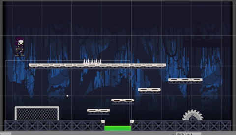
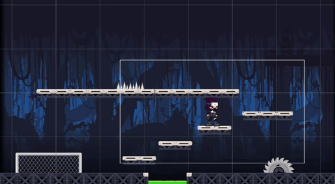
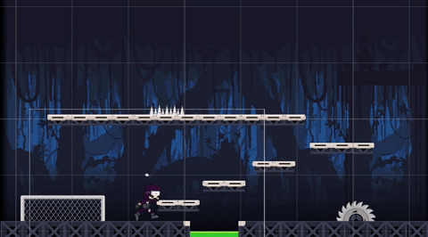
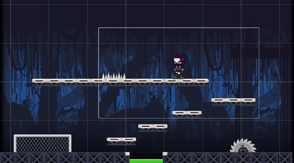
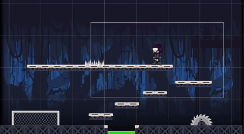

As you can see below I have included screenshots of the unity game below and explained some of the steps in the process of making it:
|  | Camera PositionI have programmed my game so that the camera follows the player, rather than the player seeing the whole level when playing. The white box shown in the gif represents the camera view in which the player sees when in game play. Maximum X and Y values ensure that the camera does not move outside of the level I created. |
|  | Jump AnimationThe Gif above shows the jump animation I gave the sprite. I added a takeoff and landing animation to make the simulation as lifelike as possible, allowing gamers to immerse themselves in the game play.I also spent time changing the elements of physics which effected the jump to ensure it was as user friendly as possible. Although origionallly i played with lifelike velocity, the landing took too long in the context of a game. After some research i discovered most 2D platformers (including the likes of Super Mario) ensure that the jump up takes longer than the jump down which provides more accurate landing, in order for the sprite to land on blocks. |
|  | CollisionsAnother element I had to consider when creating this 2D platformer is the collisions between the sprite and other componants within the game. This gif shows how I have added collisions to the top of blocks as when the sprite lands on them, it does not fall through, however not on the bottom which means the sprite can run through the block and jump from beneath. |
|  | Attack & Jump Attack AnimationsAdditionally to the idle and jump animations I also added an attack and jump attack animation. This animation is activated when left shift is pressed. The animation for attack will play if left shift is pressed and velocityY = 0 and the jump attack animation is played when volocityY > 0. These animations allow the player to attack both in the air and on the ground. |
|  | Slide AnimationAnother additional function to the sprite which I added is the slide animation. This is activated by the player pressing left control, and allows the sprite to slide accross the screen. |